Associated British Studios
Screen Grabs
Main Entrance
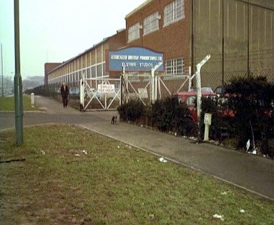
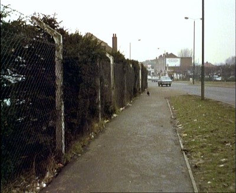
Ramp for Underground Car
Park and Car Park in front of
Administration Building (A)
The demolished ‘Studio 70’ Cinema can be seen in the background.

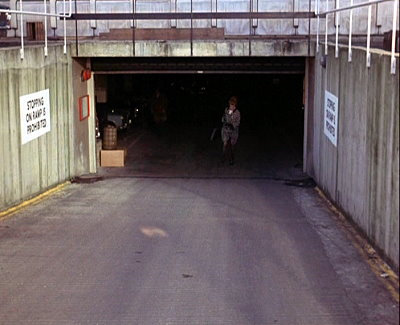
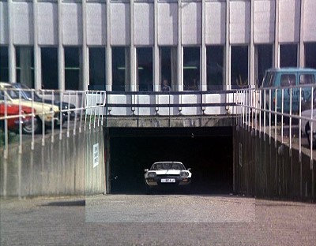
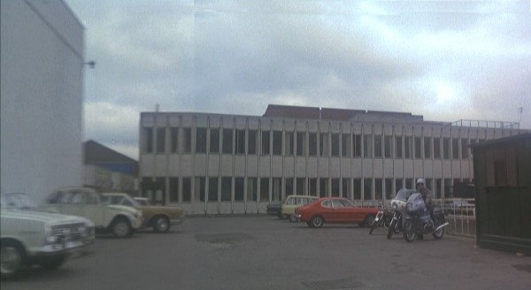
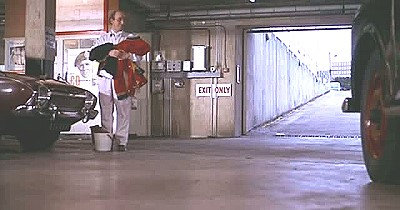
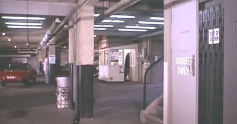
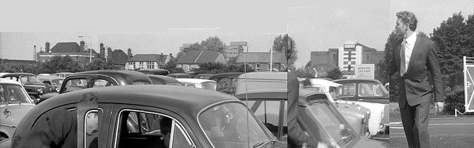
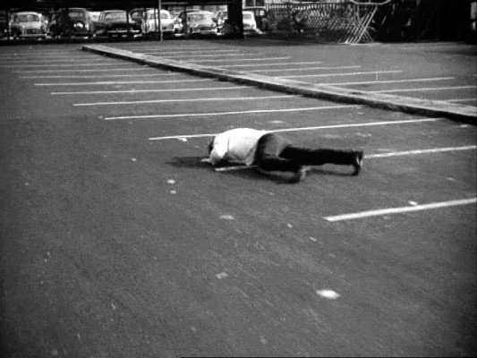
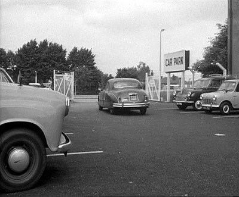
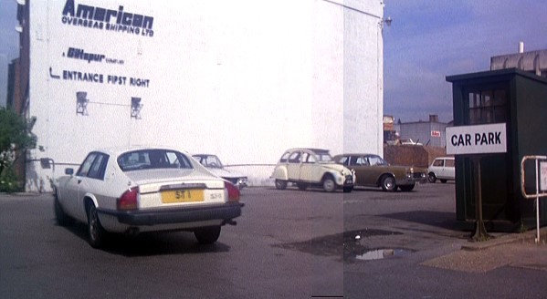
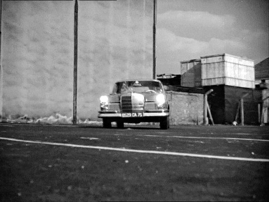
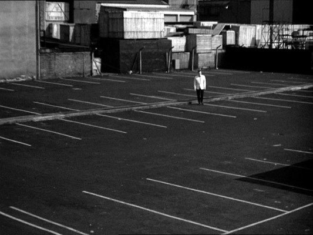
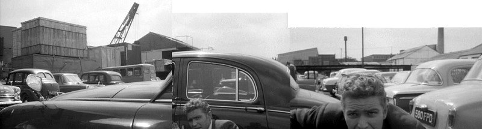
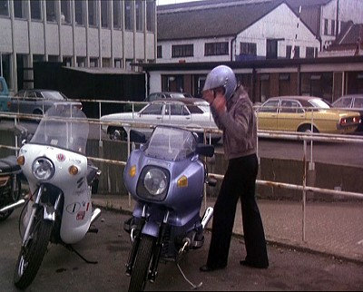
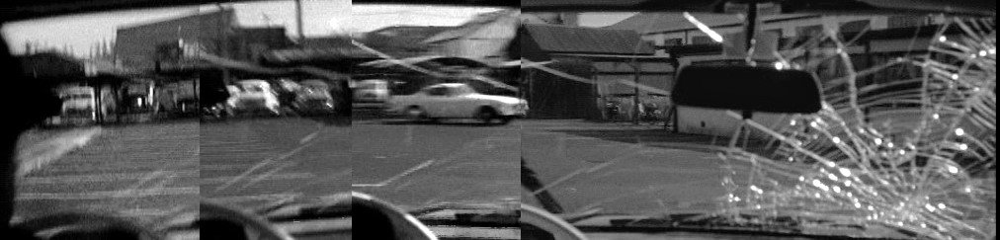
Car park before Administration Building and Stages 7,8, and 9 were built.
Stages 1 and 2 seen behind the power house from current Shenley Road entrance

John Maxwell Building after passing through security
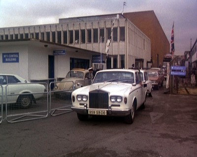

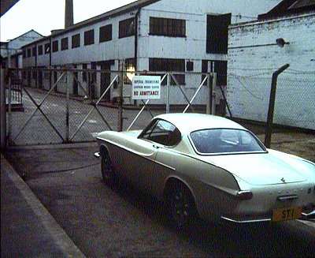
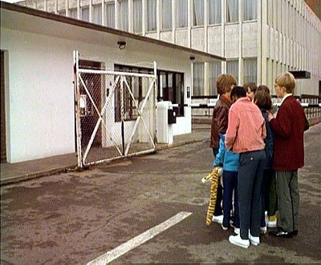
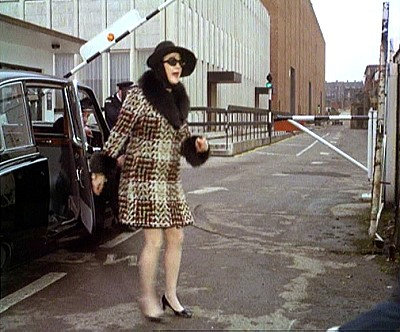
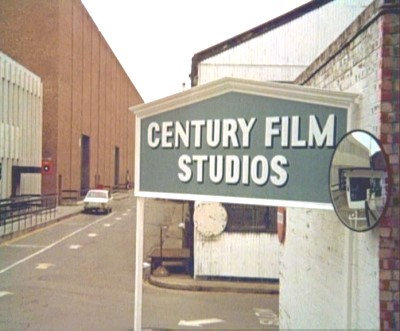
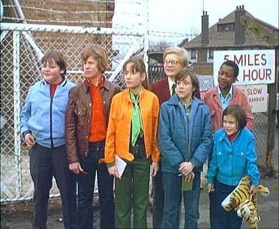
Gate by Elstree House.
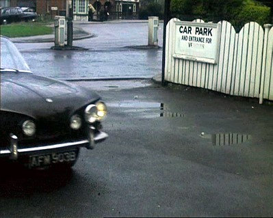
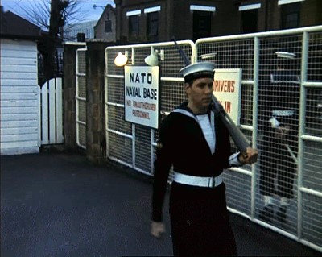
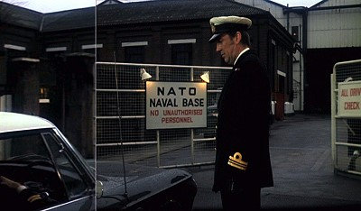
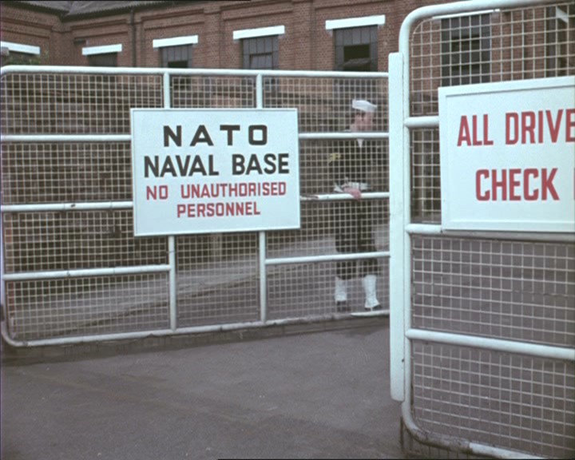
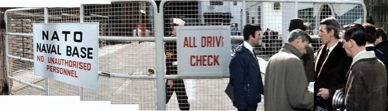
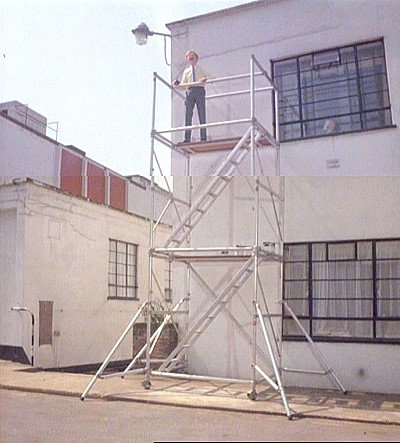
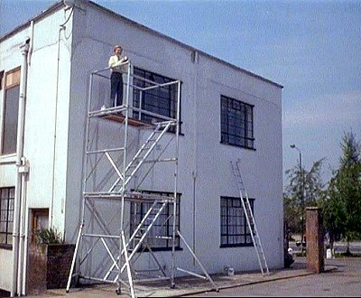
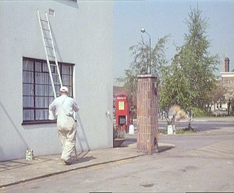
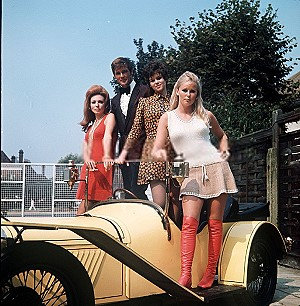
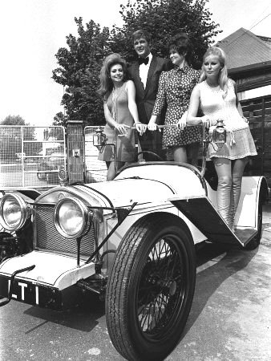
View from Elstree House garden
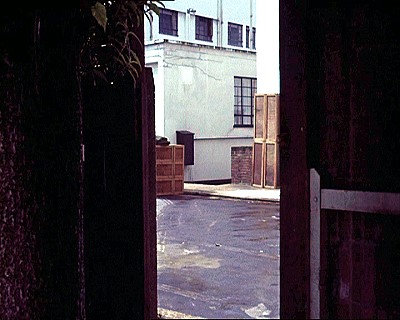
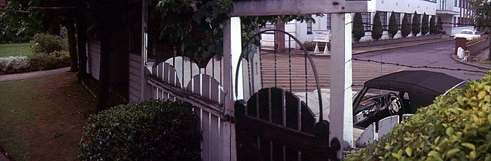
Elstree House
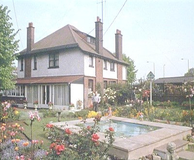
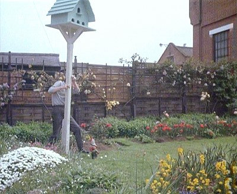
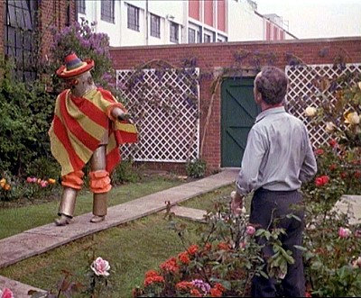
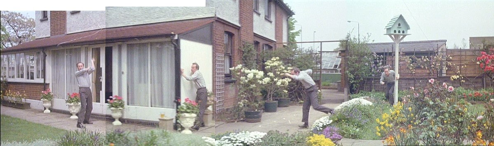
Greenhouse between Elstree House and Power House
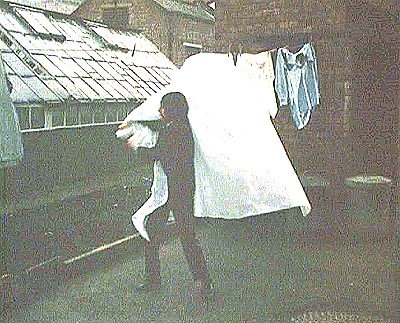
Elstree House and Reception
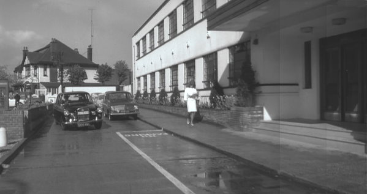
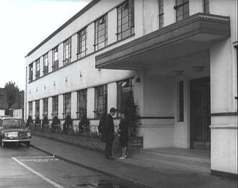
Western Gates looking towards stages 1 and 4 …..and out to Shenley Road
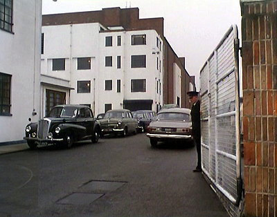

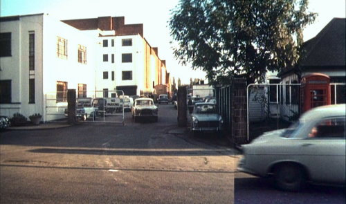
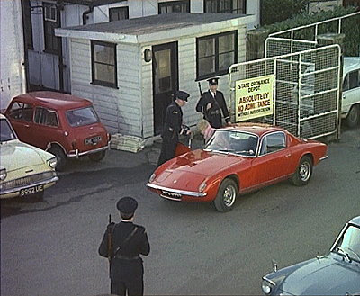
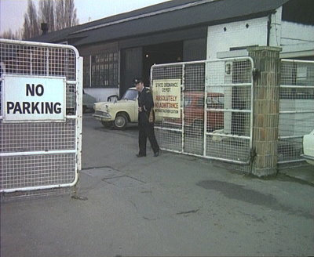
External doors to Stage1.
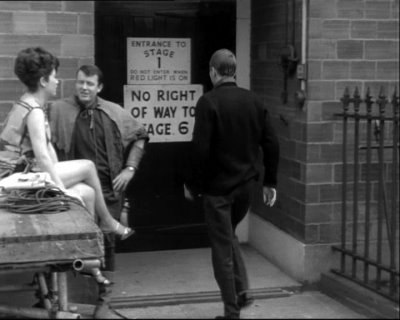
Stage 6 Dressing rooms and stairs down to Stage 6 internal door
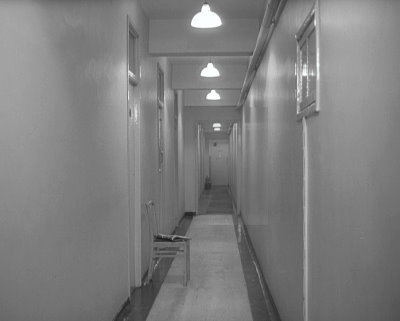
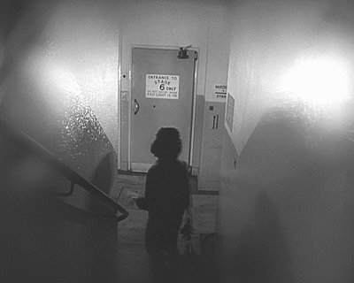
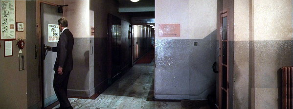
Reception Desk
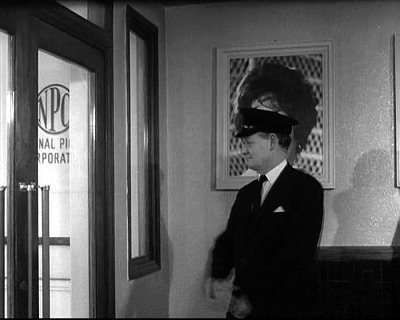
Between Administration Building and Stages 1 and 2
Interior space between the two wings of offices of Reception building
Garage by Western gate (was pre-war the studio resturant) , there was a small building between this and the actual gate that housed a script typing and reproduction service.
Roof of the Cutting Rooms with Film vaults beyond– Section S
South of Cutting Room
The external doors of Stages 4 and 1
Not confirmed - but probably T - Mobile Recording/EMI Sound. Between the film vaults and the West Gate opposite Stage 1
Air Raid Shelter – between Stage 5 and Cutting Rooms
By Stage 4 looking towards Western Gate past T and U sections.
Building directly opposite Stage 4’s door.
Unknown prop store Stage 5 in the background.
Road between Plasterers Shop (G) and Maintenance Building (H), Stage 5 in the background.
Road between Plasterers Shop (G) and Storage Buildings (F), Stage 6 in the background.
The road between Plasterers Shop (G) and Storage Buildings (F) looking from the back of Stage 6.
Plasterers Shop on left, Stage 5 on right and Stage 6 in the centre of the later picture

Stage 4
The side entrance to Stage 3 and road between Stages 3 and 4 and Sound and Post Production building
Stage 5 seen from Large Water Tank and the carpenters shop of Scene Dock, F.
Area around water tank (tall triangular structure is water tank back drop, the staircase is a moveable platform for painting scenes) Scene Dock (F), and back of standing sets.
(the above statue featured in THE SAINT: Sibao and the guard’s box in THE CHAMPIONS: The Search)
In first photo you can see part of the standing set with the Scene Docks (F) behind. In the last photos you can see the roof of the Maintenance Building above the Workshop (G). As well as a wooden statue seen in THE AVENGERS: A Touch of Brimstone)
Same area in 1961
S - Cutting rooms
Road between H and K
J - Boiler House chimney
K - Plasterer's Shop and J - Boiler House(before and after removal of coal hopper)
K - Plasterer's Shop and L - Old Scene Docks
H - Maintenance Building and J - Boiler House
Corner of H - Maintenance Building opposite Stage 9
Road between Stages 7,8, and 9 and the boiler house and workshops.
This shot is from 1970 and it can be seen that the backlot town has been mostly removed. The new timber store can be seen at the top of the ramp.
Same area in 1961 before the studios were built showing scene docks and the old timber store.
Between F and Stage 5
Large Water Tank
Small Water tank
The large cat head is seen THE BARON episode, The Maze.
Road between the two water tanks
The Back Lot in winter.


Far South East corner of back lot bordering public park.
The 'building' at the top of the hill is the Water Tank backdrop.
The footpath on the opposite side of the fence above.
Back of H- Maintenance Building, the road rises steeply between Stage 9 and the H - Maintenance Building up to the backlot.
A panorama with Stage 9 far left looking over the industrial units at the far eastern corner of the back lot with the Revell offices on Maxwell Road, the last three storey red brick building on the right
Stages 7,8, and 9 (and underground car park under construction) and the same location (after the removal of the standing set)
Back lot with Stage 9 at far left hand side

Between Stages 3 and 4 and Sound and Post Production building
From Keith towers: “The building to the left of the picture was the Sound and Post Production building. It housed Dubbing 1 and Dubbing 2 suites, Post Sync, Special FX and music recording theatre. I worked as a projectionist here from late 1968 untill the first wave of redundancies in 1974, I think it was.
The building actually looked onto the side entrances to Stages 2 and 3. As a bit of history: Stage 2 was used for the Up Pompey film and I recall a Hammer Sherlock Holmes movie, Stage 3 for 'Beatrix Potter' , 'Digby, Biggest Dog In The World' , ‘Night Watch’, with Elizabeth Taylor and the ‘Where Eagles Dare’ fight scene on the skii lift. On the other side of the building is Stage 5 and straight ahead, the cutting rooms.”
Jack Nicholson makes his way down from his dressing room (the windows lit in the above photos) past the entrance to Stage 3 and on to Stage 4.
The post-production buildings from the corner of stage 5.